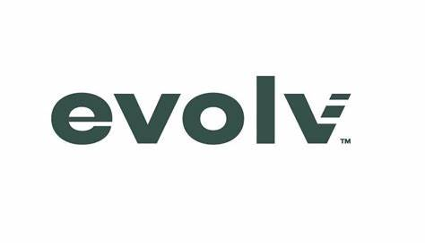

Evolv Technology
Summer 2024, Software Engineering Intern

About
Over the summer, I worked on developing a randomized traffic flow testing module using Python and PyTest for 4K+ weapon detection scanners deployed worldwide. My primary responsibility was to design the system architecture and deploy the testing module onto BeagleBone devices, where I hosted APIs (Flask) for scanner testing.
I successfully integrated the testing devices with Evolv's CI/CD pipeline, which is maintained through Git, BitBucket, Jira, and CircleCI. This pipeline runs tests daily, ensuring the accuracy and reliability of the scanners.
I also worked closely with a team of over five engineers to document and replicate testing hardware for use across different departments, ensuring that the testing module was scalable and reusable.
Over the course of more than 50 hours of simulated traffic testing on physical scanners, I was able to identify and expose critical performance issues, such as memory leaks and other system inefficiencies. This work contributed significantly to improving the overall functionality and performance of the scanners.
Gallery